Product Discovery
with Agentforce
Build a Product Discovery topic for NTO's customer agent, explore the other 10 topics already wired up, then see your work invoked from Agentforce Coworker, the employee-facing AI surface.
What You'll Build
Northern Trail Outfitters (NTO) sells outdoor gear across 11 product categories, from outerwear and footwear to camping and electronics. In this workshop, you'll extend Trail Guide, NTO's AI shopping assistant, by adding a Product Discovery capability so customers can search the catalog, get personalized recommendations, and explore products through natural conversation.
| Unit | What You'll Do |
|---|---|
| 0 | Get your org ready |
| 1 | Explore the NTO product catalog (50 products, 11 categories) |
| 2 | Open Trail Guide in Agentforce Builder and explore what's pre-configured |
| 3 | Add the Product Discovery subagent from the Asset Library |
| 4 | Test the agent with real product queries |
| 5 | Add a new product and see it show up in search results right away |
| 6 | Explore all 11 topics, run a multi-topic conversation, and recap |
| 7 | See your work invoked from Agentforce Coworker, the employee AI surface |
| 8 | Build a Product Insights Dashboard with Agentforce Vibes |
Terminology Cheat Sheet
| Term | What it means in this workshop |
|---|---|
| Trail Guide | The NTO AI shopping assistant you're extending |
| Subagent | A specialized module Trail Guide delegates to (Product Discovery, Customer Service, Loyalty) |
| Action | A backend function the subagent can call (e.g., Search Product Catalog) |
| Asset Library | A library of pre-built subagents you can add to your agent |
| Explorer | The left panel in Agentforce Builder showing your agent's subagents and resources |
| New Version | Creates an editable draft from the current active version |
| Commit Version | Publishes your draft changes and makes them the active version |
| Agentforce Coworker | The employee-facing AI surface built into the global search bar; can hand off to agents like Trail Guide |
Meet the Full Agent
Trail Guide is a customer super agent: one agent that handles many jobs, not a single-purpose bot. Before you start building, here's what it covers across its 11 topics:
| Topic | What It Does | Data Source |
|---|---|---|
| 🛍️ Product Discovery | Search the catalog, filter by price, get personalized picks | Product2 records |
| 📚 Product FAQ & Knowledge | Answer product care, warranty, sizing, and policy questions | Knowledge articles |
| 📦 Order Status | Look up orders by number or email and show items | Order / OrderItem records |
| ❤️ Cart & Wishlist | View, add, and remove saved items | Product2 records |
| 📍 Store Locator | Find NTO stores by city, state, or zip | 8 store locations |
| ⭐ Loyalty & Promotions | Check points, tier status, redeem promo codes | Loyalty records |
| 🎧 Customer Service | Look up profiles, order history, open cases, start returns | Contact / Case / Order records |
| ⭐ Feedback & Reviews | Submit product reviews with ratings, view past reviews | Guest_Review__c records |
| 📣 Marketing & Offers | View active campaigns, subscribe to category sale alerts | Campaign / Alert_Preferences__c |
| 🚫 Off Topic | Redirects out-of-scope requests back to NTO topics | Guardrail (no data) |
| ❓ Ambiguous Question | Asks for clarification when requests are too vague | Guardrail (no data) |
Sign Up for a Salesforce Org
- In your web browser go to this link: https://orgfarm.salesforce.com/signup
- Enter the Event Code: UGPCOGGI
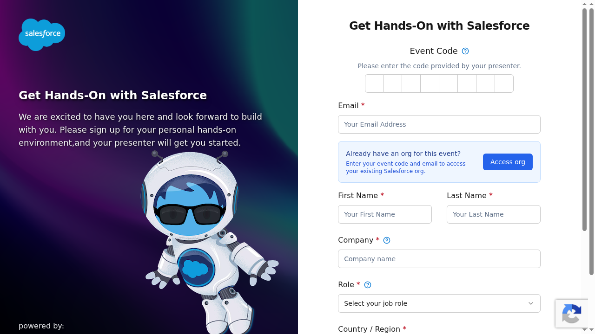
Log In and Verify
- Click the login link from your email.
- You'll land on the NTO org home page. Confirm you see "Northern Trail Outfitters" in the org.
NTO sells outdoor gear across 11 categories. These are the 50 products the agent searches when a customer asks about gear.
Open the Products List
- Click the App Launcher (9-dot grid icon, top-left corner).
- Type "Products" in the search box and click Products.
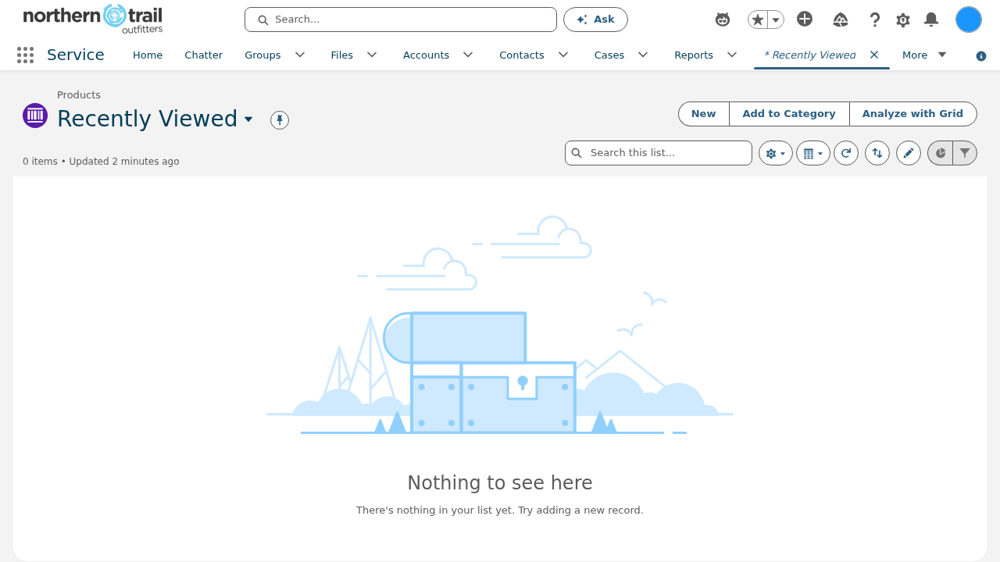
Switch to All Products View
- The list view defaults to "Recently Viewed" which may show 0 items. Click the list view dropdown that says "Recently Viewed".
- Select "All Products" from the dropdown.
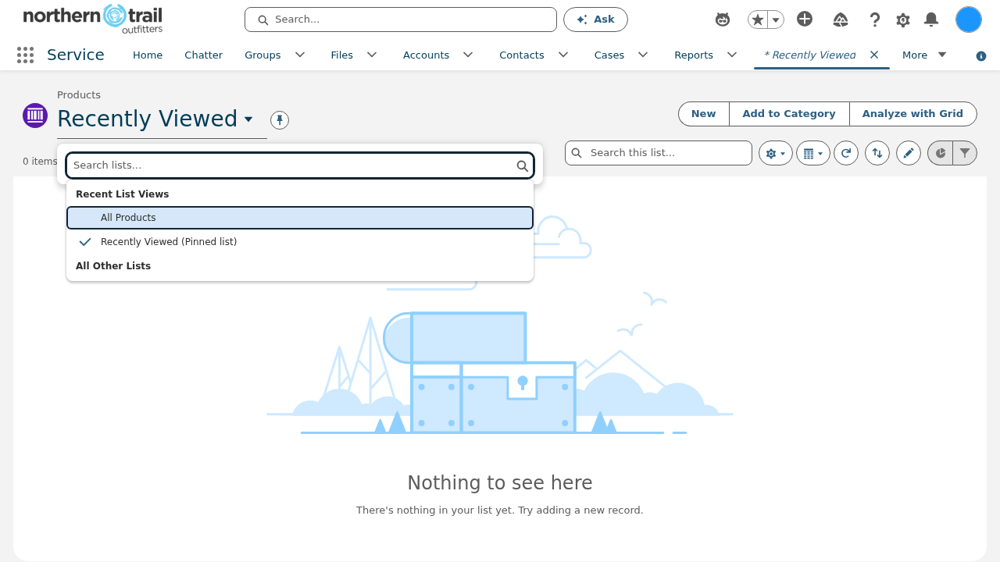
- You should now see 50 products across 11 categories.
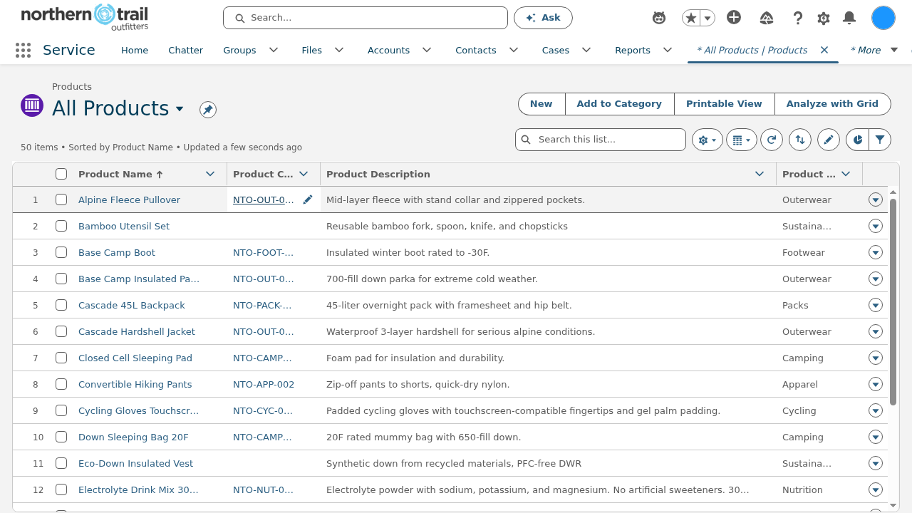
Trail Guide is NTO's AI shopping assistant. It's pre-configured with 10 subagents covering customer service, orders, loyalty, wishlists, store locator, knowledge, reviews, marketing, and guardrails — but it can't search products yet. That's what you'll build.
Open Trail Guide in Agentforce Builder
- Click the gear icon (top right) to go to Setup.
- In the Quick Find box, type "Einstein Setup".
- Under Einstein Generative AI, click Einstein Setup.
- Toggle Turn on Einstein and refresh your browser.
- In the Quick Find box, type "Agents".
- Under Agentforce Studio, click Agentforce Agents.
- Toggle the Enable button for Agentforce at the top of the interface.
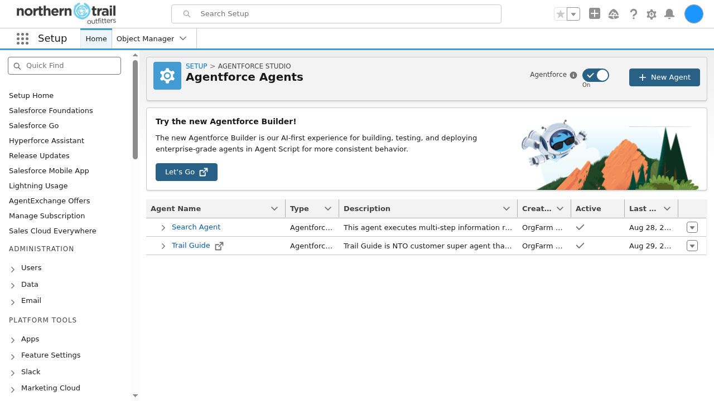
- Click Trail Guide in the agent list. It will open in the Agentforce Builder in a new tab.
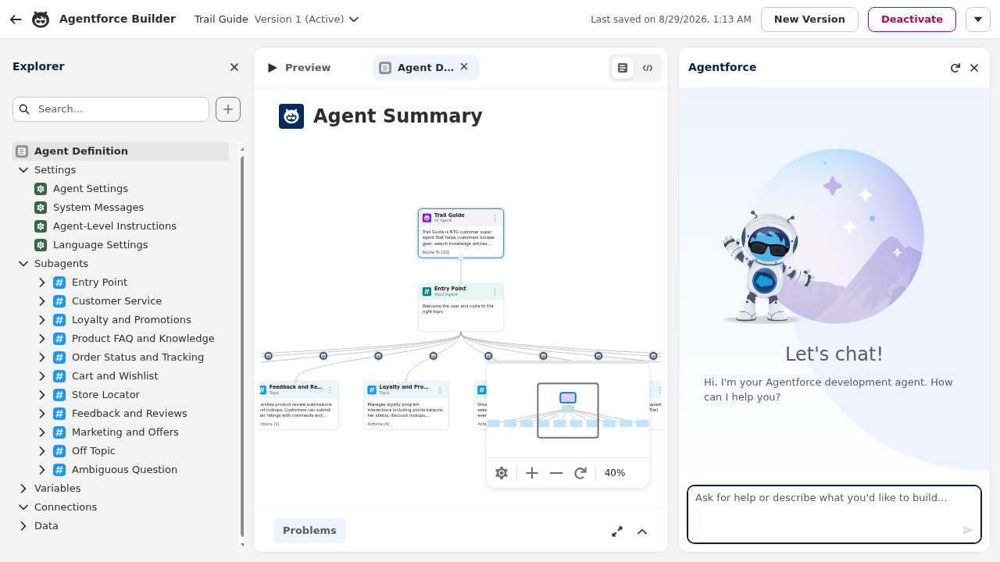
Explore What's Already Configured
Take a minute to look around. In the Explorer panel (left side), expand the Subagents folder. Trail Guide has these pre-configured subagents:
| Subagent | What It Does |
|---|---|
| Customer Service | Handles profile lookup, order history, case management, product returns |
| Loyalty and Promotions | Manages loyalty points, tier status, discounts, promo codes, proactive offers |
| Product FAQ and Knowledge | Answers product questions from the NTO knowledge base |
| Order Status and Tracking | Looks up orders and shows items and shipping status |
| Cart and Wishlist | Manages saved items and wishlist |
| Store Locator | Finds nearby NTO retail stores |
| Feedback and Reviews | Handles product reviews and customer feedback |
| Marketing and Offers | Manages alert preferences and marketing subscriptions |
This is the main build. You'll pull a ready-made Product Discovery subagent from the Asset Library so customers can find products in plain language.
Create a New Version (Draft)
Trail Guide is currently on Version 16 (Active). You can't edit an active version directly; you need to create a draft first.
- In the top-right corner of the builder, click New Version.
- The header will change to Version 17 (Draft). You're now on an editable draft.
Add the Product Discovery Subagent
- In the Explorer panel (left side), hover over the Subagents category and click the + icon that appears next to it.
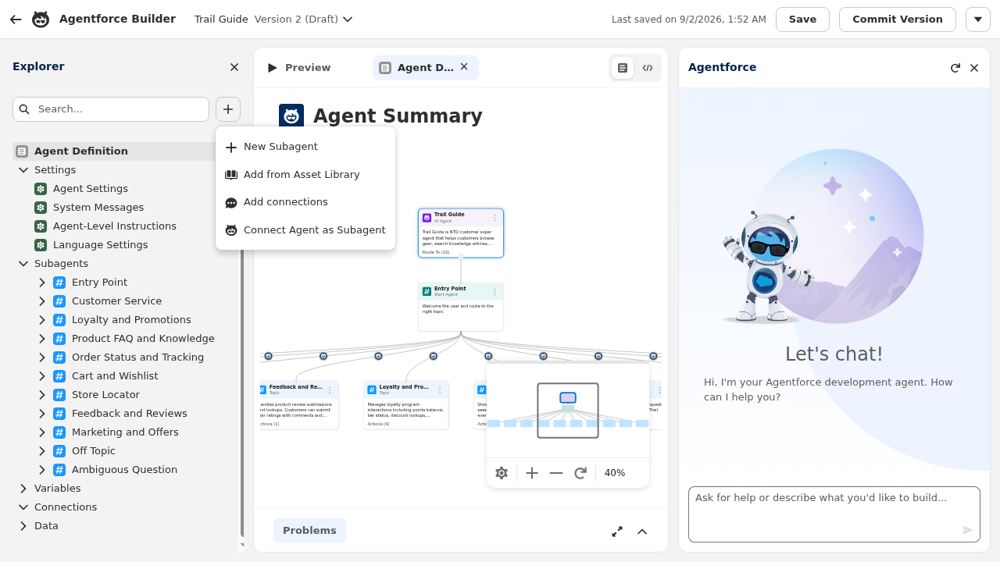
- From the menu, select "Add from Asset Library".
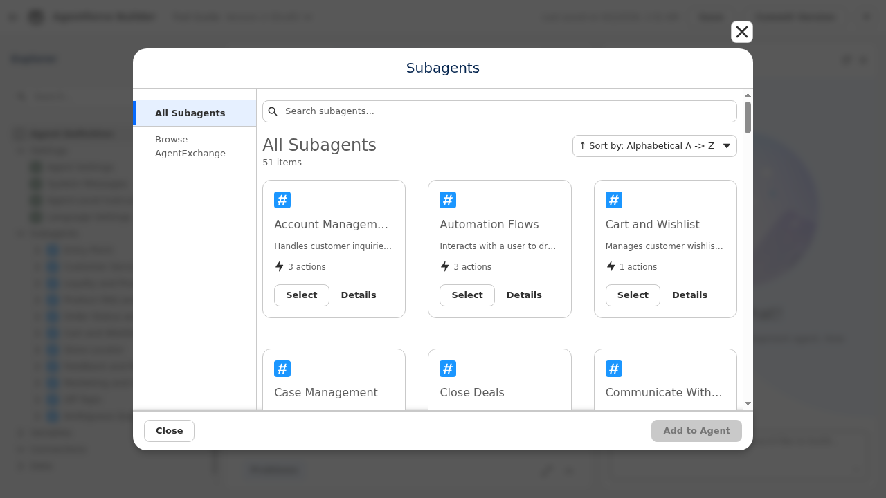
- In the search box at the top, type "Product Discovery".
- You'll see Product Discovery appear in the results. Click Select, then click Add to Agent.
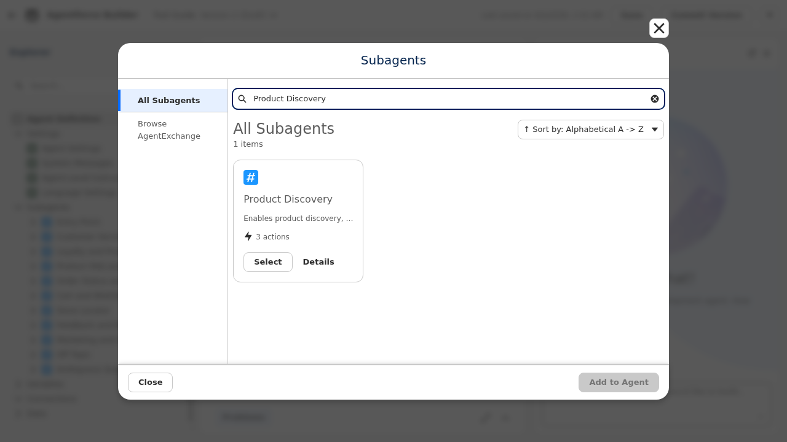
Review What's Included
- Click on Product Discovery in the Explorer tree to open it.
- You'll see it comes with 3 pre-wired actions:
| Action | What It Does |
|---|---|
| Search Product Catalog | Searches products by keyword, category, and price — the core search engine |
| Get Customer Profile | Retrieves loyalty tier, points, and order history for context |
| Get Personalized Recommendations | Returns tailored product suggestions based on purchase history |
Commit Your Changes
- Because you're on a draft version, the top-right corner shows a Commit Version button. Click it to publish your changes and make them live.
- Wait for the confirmation. Trail Guide now has Product Discovery capabilities and your draft becomes the new active version.
Now open the Conversation Preview and try a few product queries. You'll see the agent route to Product Discovery and pull results straight from the live catalog.
Open Conversation Preview
- In the Agentforce Builder, look for the Conversation Preview panel (usually on the right side or accessible via a chat icon).
- If it's not visible, click the chat/preview button in the top toolbar to open it.
Run Test Queries
Try each of these prompts in the Conversation Preview. After each one, observe the response.
Show me hiking boots under $200
Do you have a GPS watch?
The agent searches live data, not a static index. Add a new product to the catalog and it turns up in search results right away.
Create a New Product
- Click the App Launcher (9-dot grid) and search for "Products".
- Click New to create a product.
- Fill in the details. Here's an example to start from:
| Field | Value |
|---|---|
| Product Name | Trailblazer Insulated Vest |
| Product Code | NTO-OUT-007 |
| Product Family | Outerwear |
| Product Description | Lightweight, packable vest with PrimaLoft insulation. Perfect for layering on cool mornings. |
| Active | ✅ Checked |
Add a Standard Price
- On your new product record, scroll down to Standard Price (or Price Books related list).
- Click Add Standard Price and enter a price (e.g., $149.00).
- Ensure the price book entry is Active.
Search for Your New Product
- In the Agentforce Builder, open Conversation Preview (click the Preview tab if it's not already open).
- Search for your new product:
Do you have an insulated vest?
Product Discovery is just one of Trail Guide's 11 topics. Try prompts across the rest too: FAQs, order tracking, wishlist, store locator, loyalty, customer service, product reviews, marketing offers, and the guardrails that keep it on topic.
Test All Agent Capabilities
In Conversation Preview, try prompts from each topic area. The agent figures out which topic each one belongs to on its own.
🛍️ Product Discovery (the one you built)
Show me rain jackets under $200
📚 Product FAQ & Knowledge
How do I clean and maintain my hiking boots?
What does the NTO warranty cover?
What is your gift card policy?
📦 Order Status & Tracking
What's the status of order 00000106?
Can you show me my recent orders?
❤️ Cart & Wishlist
What's on my wishlist?
Add the Ridgeline Hiking Boot to my wishlist
📍 Store Locator
Where's the nearest NTO store in San Francisco?
What are the hours for the San Francisco store?
⭐ Loyalty & Customer Service (pre-built)
How many loyalty points do I have?
Do I have any open support cases?
⭐ Feedback & Reviews
Show me my product reviews
I want to leave a 5-star review for the Cascade Hardshell Jacket — it kept me warm on a freezing ridge hike!
📣 Marketing & Offers
What promotions are running right now?
Sign me up for sale alerts on Outerwear and Footwear
🚫 Off Topic (guardrail)
What's the weather going to be like tomorrow?
❓ Ambiguous Question (guardrail)
Help me with my thing
Multi-Topic Conversation Flow
Now try a full customer journey: one conversation that moves across several topics. Copy each prompt in order, and the agent handles the switch between topics without any prompting from you.
I'm looking for a waterproof hiking jacket under $250
How should I care for a waterproof jacket? What's the warranty?
Save the Cascade Hardshell Jacket to my wishlist
Can I try it on in a store near San Francisco?
How many loyalty points do I have? Any discounts I can use?
I love this jacket — let me leave a 5-star review! "Best purchase I've made all year, kept me dry on a rainy trail run."
Are there any sales coming up? Sign me up for Outerwear sale alerts.
What You Built
| Topic | Capability |
|---|---|
| 🛍️ Product Discovery (you built this) | Natural language search, price filtering, personalized recommendations |
| 📚 Product FAQ & Knowledge | Knowledge article search for policies, care guides, sizing, warranty |
| 📦 Order Status | Order lookup by number or email, order details and item list |
| ❤️ Cart & Wishlist | View, add, and remove saved items |
| 📍 Store Locator | Find stores by city, state, or zip with hours and features |
| ⭐ Loyalty & Promotions | Points balance, tier status, promo codes, discounts |
| 🎧 Customer Service | Profile lookup, order history, open cases, returns |
| ⭐ Feedback & Reviews | Submit product reviews with star ratings, view past reviews |
| 📣 Marketing & Offers | View active campaigns, subscribe to category sale alerts |
| 🚫 Off Topic | Guardrail — redirects out-of-scope requests back to NTO topics |
| ❓ Ambiguous Question | Guardrail — asks for clarification on vague requests |
Trail Guide is what customers talk to. Agentforce Coworker is what NTO employees talk to, and it can hand off to Trail Guide to get real answers, using the exact Product Discovery subagent you just built.
Turn On Agentforce Coworker
- Click the gear icon (top right) to go to Setup.
- In the Quick Find box, type "Einstein Setup" and select it.
- Find Turn on Beta Generative AI Models and switch it On.
- In the Quick Find box, type "Agentforce Coworker" and select Get Started with Agentforce Coworker.
- Click Get Started, then click Turn On.
- A confirmation dialog will appear asking "Turn on Agentforce Coworker?" — review the details and click Turn On to confirm.
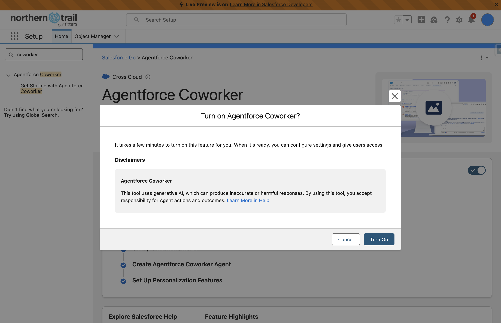
Ask Coworker a Direct Question
- Click the App Launcher (9-dot grid icon, top-left corner).
- Search for and select the Service app.
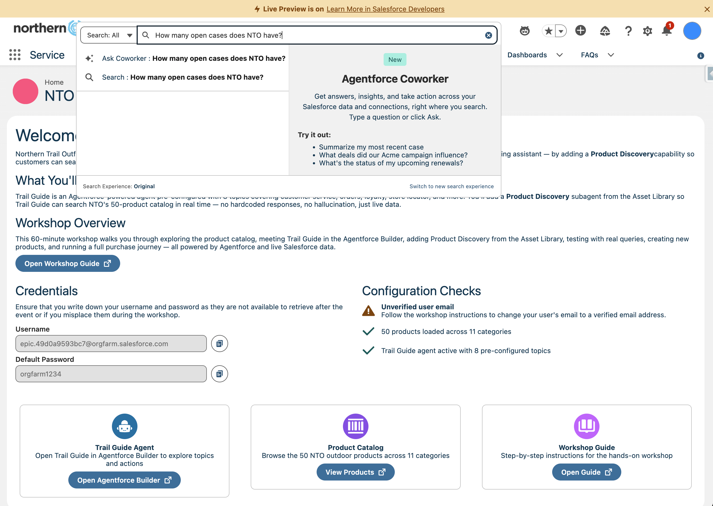
Click the global search bar at the top of your org. Ask a plain-language question that pulls from CRM data directly:
How many open cases does NTO have?
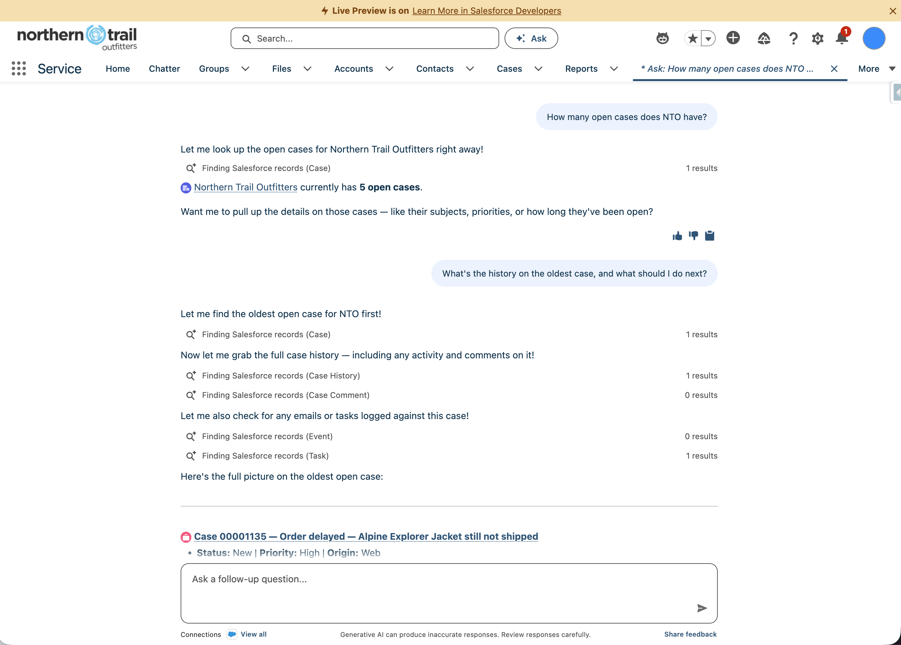
What's the history on the oldest case, and what should I do next?
Create a task to follow up with the customer by September 18th to update them on their order status.
Watch Coworker Hand Off to Trail Guide
Now ask something that needs an actual customer-facing agent to answer, not just a record lookup.
Does the Ridgeline Hiking Boot show up when a customer searches for hiking boots?
Try a Second Hand-Off
Check if we have any rain jackets under $200 in stock.
Compare the Two Entry Points
| Trail Guide | Agentforce Coworker | |
|---|---|---|
| Who talks to it | Customers | NTO employees |
| Where it lives | Embedded chat / Conversation Preview | Global Salesforce search bar (also Slack, Teams) |
| What it's built from | Subagents (Product Discovery, Loyalty, etc.) | Orchestrates whole agents, Flows, CRM actions, APIs |
| What you built | The Product Discovery subagent itself | — |
| What it proves | The subagent answers correctly in isolation | The subagent is wired into the org, reachable from anywhere |
In this unit, you'll use Agentforce Vibes, Salesforce's AI-powered development tool, to build something different: a visual Product Insights Dashboard that surfaces patterns across the NTO catalog you've been searching all workshop — like which categories have the most products and where prices cluster.
Launch Agentforce Vibes
- Select the Setup gear icon, then select Agentforce Vibes.
- Accept the Terms and Conditions.
- You'll see an "Agentforce Vibes is loading…" screen with the message "This may take a few minutes — leave this page open and we'll refresh when it's ready!" Wait for it to finish loading — do not close or navigate away.
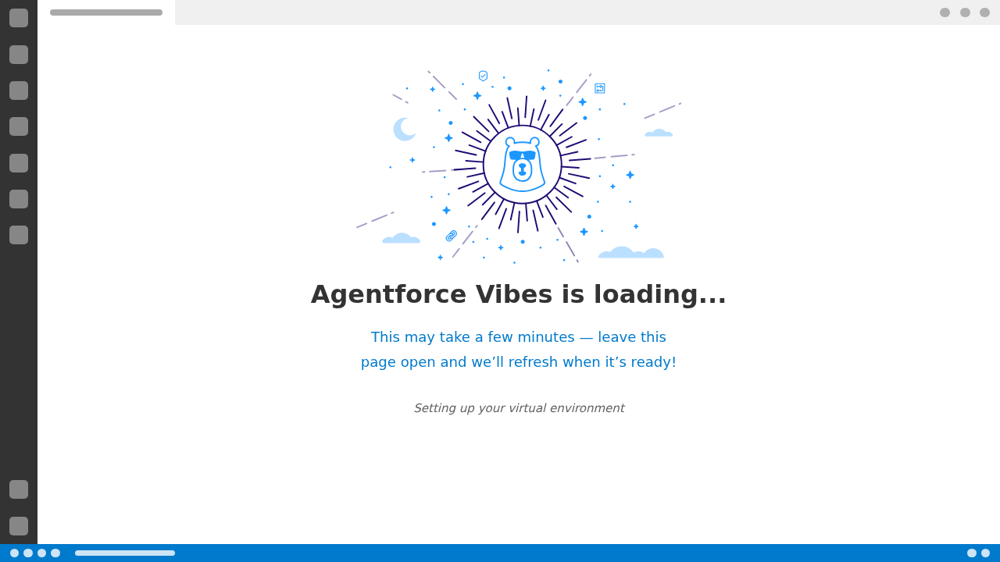
- Once loaded, select I agree to the terms on the left sidebar, then click Enable and Start Building.
Prompt Vibes to Build the Dashboard
You're going to build a Product Insights Dashboard — a Lightning Web Component that visualizes the NTO catalog at a glance: product counts by category, price ranges, and a few standout items.
- In the left sidebar, click the Codey icon to open the Agentforce Vibes chat panel.
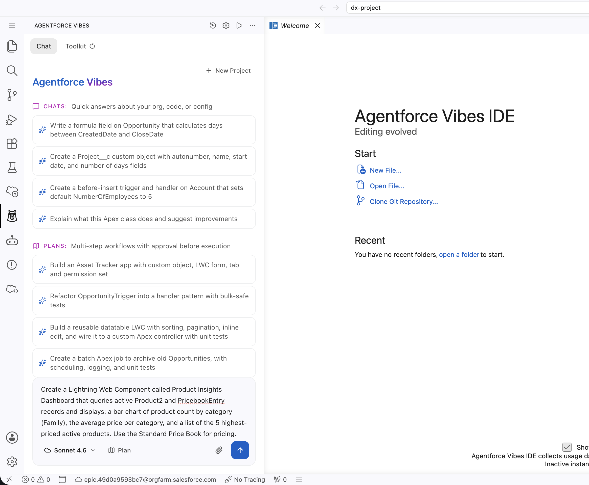
- In the Vibes sidebar, enter a prompt like:
Create a Lightning Web Component called Product Insights Dashboard that queries active Product2 and PricebookEntry records and displays: a bar chart of product count by category (Family), the average price per category, and a list of the 5 highest-priced active products. Use the Standard Price Book for pricing.
- Watch as Vibes plans the component before writing anything. It will typically explain what it's about to generate, including the Apex controller and the LWC itself, before touching your org.
- Review what it proposes: an Apex class exposing
@AuraEnabledmethods to fetch the aggregated data, plus the LWC markup and JavaScript to render it.
Deploy and Add the Dashboard
- Once you're happy with what Vibes generated, tell it to deploy the component to your org:
Deploy this component to my org.
- Vibes will deploy the Apex controller and LWC directly to your org. Confirm the deployment succeeds with no errors before moving on.
- Go to the Sales App, open Accounts, and select Northern Trail Outfitters.
- On the Account record page, click the gear icon (top right) and select Edit Page to open Lightning App Builder.
- In the left-hand component panel, scroll to the Custom section and find ProductInsightsDashboard.
- Drag it onto the Account record page layout.
- Click Save, then click Activate.
- Under App Default, select Assign as App Default.
- Under Lightning Apps, select Sales, click Next.
- Select Desktop, click Next.
- Click Save.
View Your Dashboard
Go back to the Northern Trail Outfitters Account record.
| Resource | Link |
|---|---|
| Agentforce Trailhead | Build Agentforce Agents Trail |
| Agent Builder Docs | Agentforce Developer Guide |
| Salesforce Help | help.salesforce.com |